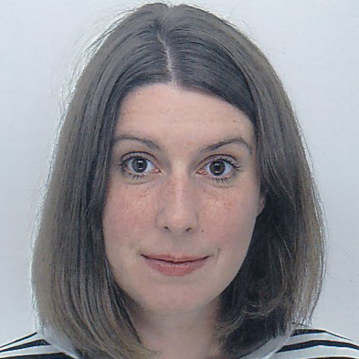
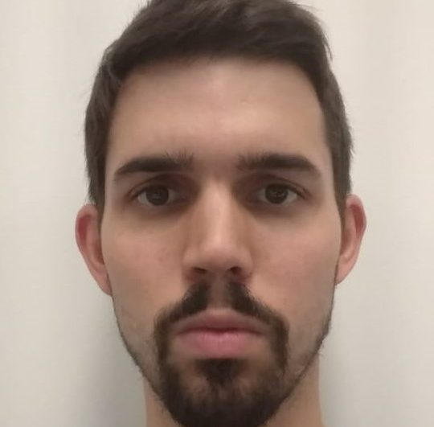

The VisuoMotor Lab investigates interactions between visual perception and eye movements using psychophysical and eyetracking methods. The current focus is on understanding visuo-motor learning and adaptation in performing tasks consolidated over human evolution (e.g. dealing with re-afferent motion during pursuit eye movements), one lifetime (e.g. crossing the road), or over a few hours of training (e.g. gaze-control).
David Souto
Lecturer in Psychology
School of Psychology and Vision Sciencest
University of Leicester
Lancaster Rd
Leicester
United Kingdom
d.souto@le.ac.uk
++44 (0) 116 229 7184
Pre-prints
Tipura, E., Souto, D., & Fox, E. (2022, October 3). Trait anxious people take longer to search for happy faces in the presence of neutral and fearful distractors. PsyArxiv. Psyarxiv.com/p76eb
Souto, D., Sudkamp, J., Nacilla, K., & Bocian, M. (2021, June 13). Tuning to a hip-hop beat: Pursuit eye movements reveal processing of biological motion. PsyArxiv. PsyArxiv.com/4bf69
Sudkamp, J., & Souto, D. (2021, November 30). Pedestrian's overt attention affects time-to-arrival estimates of oncoming traffic. PsyArxiv, PsyArxiv.com/a2zsh
Publications
Bruno, A., Sudkamp, J., & Souto, D. (2023). A metacognitive approach to the study of motion-induced duration biases reveals inter-individual differences in forming confidence judgments. Journal of Vision, 23(3), 15-15. https://doi.org/10.1167/jov.23.3.15 [Open Access]
Sudkamp, J., Souto, D. (2023). The effect of contrast on pedestrians’ perception of vehicle speed in different road environments. Transportation Research Part F Traffic Psychology and Behaviour 92:15-26. DOI: 10.1016/j.trf.2022.10.017 [post-print]
Barrett, D.J.K., Souto D., Pilling, M., Baguley, M. D. (2022). An Exploratory Investigation of Pupillometry As a Measure of Tinnitus Intrusiveness on a Test of Auditory Short-Term Memory. Ear and Hearing, https://doi.org/10.1097/AUD.0000000000001214. [postprint]
Sudkamp, J., Bocian, , D., & Souto, D. (2021). The role of eye movements in perceiving vehicle speed and time-to-arrival at the roadside. Scientific Reports, 11 (23312). https://doi.org/10.1038/s41598-021-02412-x (Open Access Link)
Souto, D., & Kerzel, D. (2021). Visual selective attention and the control of tracking eye movements: A critical review. Journal of Neurophysiology. https://doi.org/10.1152/jn.00145.2019. [full-text]
Souto, D., Marsh, O., Hutchinson, C., Judge, S., & Paterson, K. (2021). Cognitive plasticity induced by gaze-control technology: Gaze-typing improves performance in the antisaccade task. Computers in Human Behaviour. https://doi.org/10.1016/j.chb.2021.106831 [full-text][code (github)][data & pre-reg (osf)]
Luna R, Serrano-Pedraza, I., Gegenfurtner, K. R., Schütz, A. C., & Souto, D. (2021). Achieving visual stability during smooth pursuit eye movements: Directional and confidence judgements favor a recalibration model. Vision Research, 184, 58-73. https://doi.org/10.1016/j.visres.2021.03.003 [full-text][data]
Souto D., & Schütz, A. C. (2020). Task-relevance is causal in eye movement learning and adaptation. In Federmeier, K., & Schotter, E. (Eds.). Psychology of Learning and Motivation, Volume 73. https://doi.org/10.1016/bs.plm.2020.06.002 [full-text]
Souto, D., Smith, L., Sudkamp, J., & Bloj, M. (2020). Ambiguity in high definition: Gaze determines physical interpretation of ambiguous rotation even in the absence of a visual context. Psychonomic Bulletin & Review, 27, 1239–1246. [full-text][demo (figshare); code and data (osf)]
Souto, D., Chudasama, J., Kerzel, D., & Johnston, A. (2019). Motion integration is anisotropic during smooth pursuit eye movements. Journal of Neurophysiology, 121(5), 1787-1797.[html][demo][pdf]
Souto, D., Born, S., & Kerzel, D. (2018). The contribution of forward masking to saccadic inhibition of return. Attention, Perception, & Psychophysics, 80(5), 1182-1192 [full-text]
Souto, D., Gegenfurtner, K. R., Schütz, A. C. (2016). Saccade adaptation and visual uncertainty. Frontiers in Human Neuroscience, 10:3387, doi: 10.3389/fnhum.2016.00227 [full-text][pdf]
Schütz, A. C., Souto, D. (2015). Perceptual task induces saccadic adaptation by target selection. Frontiers in Human Neuroscience, 9:566. doi: 10.3389/fnhum.2015.00566 [full-text][pdf]
Souto, D., & Kerzel, D. (2014). Ocular tracking responses to background motion gated by feature-based attention. Journal of Neurophysiology , 112 (5) 1074-1081; doi:10.1152/jn.00810.2013 [full-text][pdf]
Schütz, A. C., Kerzel, D., & Souto, D. (2014). Saccadic adaptation induced by a perceptual task. Journal of Vision, 14(5):4, 1-19.[html][pdf]
Souto, D., & Kerzel, D. (2013). Like a rolling stone: Naturalistic visual kinematics facilitate tracking eye movements. Journal of Vision, 13(2), 1-12.[html][pdf]
Souto, D., & Johnston, A. (2012). Masking and color inheritance along the apparent motion path. Journal of Vision, 12(7), 1-18.[html][pdf]
Kerzel, D., Schonhammer, J., Burra, N., Born, S., & Souto, D. (2011). Saliency changes appearance. PLoS One, 6(12), e28292.[html][pdf]
Schütz, A. C., & Souto, D. (2011). Adaptation of catch-up saccades during the initiation of smooth pursuit eye movements. Experimental Brain Research, 209(4), 537-549.[html][pdf]
Souto, D., & Kerzel, D. (2011). Attentional constraints on target selection for smooth pursuit eye movements. Vision Research, 51(1), 13-20.[html][pdf]
van Diepen, R. M., Born, S., Souto, D., Gauch, A., & Kerzel, D. (2010). Visual flicker in the gamma-band range does not draw attention. Journal of Neurophysiology, 103(3), 1606-1613.[html][pdf]
Kerzel, D., Born, S., & Souto, D. (2010). Inhibition of steady-state smooth pursuit and catch-up saccades by abrupt visual and auditory onsets. Journal of Neurophysiology, 104(5), 2573-2585.[html][pdf]
Kerzel, D., Born, S., & Souto, D. (2009). Smooth pursuit eye movements and perception share target selection, but only some central resources. Behavioural Brain Research, 201(1), 66-73.[html][pdf]
Kerzel, D., Zarian, L., & Souto, D. (2009). Involuntary cueing effects on accuracy measures: Stimulus and task dependence. Journal of Vision, 9(11), 16 11-16.[html][pdf]
Souto, D., & Kerzel, D. (2009). Evidence for an attentional component in saccadic inhibition of return. Experimental Brain Research, 195(4), 531-540.[html][pdf]
Souto, D., & Kerzel, D. (2009). Involuntary cueing effects during smooth pursuit: facilitation and inhibition of return in oculocentric coordinates. Experimental Brain Research, 192(1), 25-31.[html][pdf]
Kerzel, D., Souto, D., & Ziegler, N. E. (2008). Effects of attention shifts to stationary objects during steady-state smooth pursuit eye movements. Vision Research, 48(7), 958-969.[html][pdf]
Souto, D., & Kerzel, D. (2008). Dynamics of attention during the initiation of smooth pursuit eye movements. Journal of Vision, 8(14), 3 1-16.[html][pdf]
Research Themes
The VisuoMotor Lab investigates the interactions between visual perception and eye movements using psychophysical and eyetracking methods. The current focus is on understanding visuo-motor learning and adaptation in performing tasks consolidated over human evolution (e.g. dealing with re-afferent motion during pursuit), one's lifetime (e.g. crossing the road), or over a few hours of training (e.g. gaze-typing). Finally, we attempt to bridge the gap between fundamental and applied research by adapting our paradigms to immersive virtual reality (VR).
Eye movement learning and adaptation
We move our eyes very efficiently and constantly to gather visual information. This is done effortlessly and mostly unconsciously, hiding the constant adjustment of eye movements that ensures accurate acquisition of visual targets (Souto, Gegenfurtner and Schütz, 2016). We have studied the role of top-down control and visual uncertainty on saccadic adaptation, showing that task-demands alone can generate saccadic adaptation. More recently, we have extended the investigation of eye movement learning to the more complex task of controlling a human-computer interface with gaze.
Sensorymotor learning: Visual and attentional control
Souto, D., Gegenfurtner, K. R., Schütz, A. C. (2016). Saccade adaptation and visual uncertainty. Frontiers in Human Neuroscience, 10:3387, doi: 10.3389/fnhum.2016.00227 [full-text][pdf]
Schütz, A. C., Souto, D. (2015). Perceptual task induces saccadic adaptation by target selection. Frontiers in Human Neuroscience, 9:566. doi: 10.3389/fnhum.2015.00566 [full-text][pdf]
Schütz, A. C., & Souto, D. (2011). Adaptation of catch-up saccades during the initiation of smooth pursuit eye movements. Experimental Brain Research, 209(4), 537-549.[html][pdf]
Gaze-typing: learning and inhibitory control
Gaze-interaction is a form of assistive communication technology that proved invaluable in allowing efficient communication in conditions such as motor neuron disease. We recently obtained funding from the British Academy to study the involvement of inhibitory control in learning to type with gaze. We benefited from the guidance of Special Effects and ACE centre in Oxford. The preregistered project can be found here (Open Science Framework).
We will be presenting this work at the European Conference on Eye Movements in Alicante (August, 2019).
Visual attention
We rely on visual attention to select the objects that enter consciousness and guide action. In the past we have explored the coupling between visual attention and eye-movements and the perceptual and oculomotor effects of our attention being drawn by visual transients.
Visual attention and eye movements coupling
There is a well-known coupling between the allocation visual attention resources and the programming of eye movements as demonstrated by the brain functional anatomy and behaviour. In several publications we have explored the extent of this coupling in the context of saccadic and smooth pursuit eye movements.
Souto, D., & Kerzel, D. (2014). Ocular tracking responses to background motion gated by feature-based attention. Journal of Neurophysiology, 112 (5) 1074-1081; doi:10.1152/jn.00810.2013 [full-text][pdf]
Souto, D., & Kerzel, D. (2011). Attentional constraints on target selection for smooth pursuit eye movements. Vision Research, 51(1), 13-20.[html][pdf]
Kerzel, D., Born, S., & Souto, D. (2009). Smooth pursuit eye movements and perception share target selection, but only some central resources. Behavioural Brain Research, 201(1), 66-73.[html][pdf]
Kerzel, D., Souto, D., & Ziegler, N. E. (2008). Effects of attention shifts to stationary objects during steady-state smooth pursuit eye movements. Vision Research, 48(7), 958-969.[html][pdf]
Souto, D., & Kerzel, D. (2008). Dynamics of attention during the initiation of smooth pursuit eye movements. Journal of Vision, 8(14), 3 1-16.[html][pdf]
Perceptual and oculomotor effects of exogenous attention
With colleagues in the University of Geneva we have looked at how distracting visual transients can disrupt current eye movement plans and impact perceptual appearance and discrimination performance.
Kerzel, D., Schonhammer, J., Burra, N., Born, S., & Souto, D. (2011). Saliency changes appearance. PLoS One, 6(12), e28292.[html][pdf]
van Diepen, R. M., Born, S., Souto, D., Gauch, A., & Kerzel, D. (2010). Visual flicker in the gamma-band range does not draw attention. Journal of Neurophysiology, 103(3), 1606-1613.[html][pdf]
Kerzel, D., Born, S., & Souto, D. (2010). Inhibition of steady-state smooth pursuit and catch-up saccades by abrupt visual and auditory onsets. Journal of Neurophysiology, 104(5), 2573-2585.[html][pdf]
Motion processing and perception
Apparent motion
Souto, D., Smith L., & Bloj, M. (2018, March). Where the rubber meets the road: Visually-inferred friction. Poster presented at the Applied Vision Association Meeting, University of Bradford, UK.[Souto.Smith.Bloj.AVA]
Souto, D., & Kerzel, D. (2013). Like a rolling stone: Naturalistic visual kinematics facilitate tracking eye movements. Journal of Vision, 13(2), 1-12.[html][pdf]
When two dots are presented in succession we can see illusory motion between them. But, to what extent is illusory motion like the real thing? In a discrimination task we showed that illusory motion can mask a target presented at very specific points along the putative apparent motion path. See more here:
Souto, D., & Johnston, A. (2012). Masking and color inheritance along the apparent motion path. Journal of Vision, 12(7), 1-18.[html][pdf]
Motion perception during smooth pursuit eye movements
How does the visual system achieve coherent perception of an object’s motion while the eyes themselves are moving? We used a new paradigm to address the question, using multiple-aperture arrays. They allow us to test motion coherence during pursuit which should be unaffected by location information. Reflexive eye movement and perceptual judgements indicated a strong asymmetry in processing global motion during pursuit, suggesting the visual system downplays the influence of motion opposite to pursuit, likely because it is dominated by re-afferent (self-induced) information.
Video demos can be downloaded on figshare. To see the low-contrast stimulus you will need to enlarge the video and play it several times before you are able to see coherent motion. The example below shows coherent motion opposite and downward from pursuit direction. Compare this to the second video, showing global motion in the direction of pursuit.
Souto, D., Chudasama, J., Kerzel, D., & Johnston, A. (2019). Motion integration is anisotropic during smooth pursuit eye movements. Journal of Neurophysiology, 121(5), 1787-1797.[html][pdf]
Conference presentations (selection)
Almajed, S., Duke, P., Souto, D. (2022). Cyclovergence movements in presence of vertical shear disparity across depth planes. Poster presented at the European Conference on Eye Movements, Leicester, UK.
Luna, Serrano-Pedraza, Souto (2020). Perceiving motion in the world during smooth pursuit eye movements: Directional and confidence judgements favour a re-calibration model. Poster presented at the Virtual Vision Science Society meeting.
PDF: Luna_Serrano-Pedraza_Souto_2020
Presentation: Luna_Serrano-Pedraza_Souto_2020
Souto, Marsh & Paterson (2019, August). Use-dependent plasticity in assistive interfaces: Gaze-typing improves inhibitory control. Poster presented at the European Conference on Eye Movements, Alicante, Spain.
PDF: Souto.Marsh.Paterson.2019.ECEM
Sudkamp, Bocian & Souto (2019, August) Visual information sampling at the zebra crossing: Gaze behaviour in speed and time to arrival judgements. Poster presented at the European Conference on Eye Movements, Alicante, Spain.
PDF: Sudkamp.Bocian.Souto.2019.ECEM
Souto, D., Smith L., & Bloj, M. (2018, March). Where the rubber meets the road: Visually-inferred friction. Poster presented at the Applied Vision Association Meeting, University of Bradford, UK.
PDF: Souto.Smith.Bloj.AVA
Media
Digital Planet BBC Wold Service Podcast "will gaze tech replace touch tech?"
Blog post: Can eye-trackers replace the computer keyboard?
British Academy Virtual Summer Showcase
People
David Souto, PhD
David is a Lecturer within the School of Psychology and Vision Sciences at the University of Leicester. He is a member of the Vision Sciences research group. He is partial to writing about himself in the third person.
Jennifer Sudkamp, MSc
PhD student, CLS studentship

Jennifer completed her MSc in Psychology at the University of Vienna, where she applied an eye-tracking methodology to investigate consumers’ attention allocation to social cues in online advertisements. She continued her studies at the Norwegian University of Science and Technology (NTNU) exploring the role of the visual road environment in the perception of driving speed. During the course of her PhD project at the University of Leicester, Jennifer will be working in collaboration with the Biomechanics and Immersive Technology Laboratory (BiomechIT Lab), led by Mateusz Bocian, to study eye-movement and walking behaviour during road-crossing by using immersive VR.
Saad Almajed, MSc
PhD student, King Saud University Scholarship
Saad is a current PhD student at the University of Leicester. His work is supervised by Phil Duke and David Souto (co-supervisor). He is interested in investigating how the visual system use vertical disparities provided by the two retinal images to perceive the inclination of surfaces separated in various depth planes. He is also interested in measuring the effect of the vertical shear disparities on cyclovergence (the movement of the eyes in the opposite directions about the line of sight) using Pupil Labs eye trackers.
Tamara Gheorghes, PhD
Teaching Fellow
After an MSc in Advanced Biological Sciences at the University of Liverpool, Tamara did a PhD on Motion Perception at Sheffield Hallam University. She then joined the Department of Neuroscience, Psychology and Behaviour at the University of Leicester as a Teaching Fellow. Her research interests include visual illusions in trajectory perception, evolutionary frameworks for cognitive processes, and the effects of sleep on cognition. In the Visuo-Motor Lab she is investigating the sensitivity of eye movements to motion illusions.
Tom Griffiths, PhD
Research Associate, ERSC IAA
Tom completed a PhD in 2020 at University College London, with a focus on access to eye-gaze control technology for children with cerebral palsy. This work involved experimental design, observation of children’s functional vision and looking behaviours and exploration of how these correlated with performance using an eye-gaze system. Tom has worked as a Clinical Scientist in the NHS, providing assistive technology (including eye-gaze) for children and adults with congenital and acquired disabilities. He has been involved in several projects and labs, including the Gaze Project based at UCL and the international collaboration EyesOnCommunication which established clinical guidelines for the assessment and provision of eye-gaze technology. Tom’s research interests include the practical implementation of research findings in eye-gaze software and ways of supporting people to learn to use this technology.
Twitter: @TG_AT
Research Gate: https://www.researchgate.net/profile/Tom-Griffiths
Former members
Olivia Marsh, MSc
Research Technician
After obtaining a BSc in Psychology from the University of Leicester, Olivia completed an MSc in Cognitive Neuroscience at the University of East Anglia, where she used eye-tracking to research reading in groups of people with Autism Spectrum Disorder, paying attention to how factors like visual attention and perception influence eye movement behaviour in complex cognitive tasks. She worked on a project funded by the British Academy investigating sensorimotor mechanisms of gaze-controlled technology, and how the interaction between a user and such systems can be improved.
Omar Bachtoula, MSc
Visiting PhD student
Omar obtained an MSc in Statistical and mathematical methods applied to behavioural research. He started his PhD in 2020 supported by a fellowship from the Ministerio de Ciencia, Innovación y Universidades (Spain), under the supervision of Prof Ignacio Serrano-Pedraza at the Universidad Complutense de Madrid. His main interests are on binocular interactions in motion perception. During his visit in the Visuo-Motor Lab Omar looked at the processing of reafference during smooth pursuit eye movements by looking at ocular following responses to background motion. He is presenting his work at ECVP 2022 in Nijmegen.
Raul Luna Del Valle, MSc
Visiting PhD student

Raúl obtained a BSc in Psychology and further completed an MSc on statistical and mathematical methods applied to behavioural research. He is doing his PhD in the field of visual psychophysics at the Universidad Complutense de Madrid, where he studies the inhibitory interaction between motion sensors tuned to coarse and fine spatial scales under the supervision of Prof Ignacio Serrano-Pedraza. Raúl’s interests mainly focus on 2D motion perception, although he also has some experience in 3D motion perception and spatial vision. During the summer months he studied recalibration to background motion during pursuit eye movements in the Visuo-Motor Lab.
Kyle Nacilla, MSc
Kyle investigated smooth pursuit eye movements towards biological motion during his master's degree.
Jayesha Chudasama, MSc
Jayesha was on a work placement in the lab investigating how smooth pursuit eye movements affect motion coherence. She is now a PhD student at the University of Manchester, investigating the relationship between motor systems and language processing using a range of neuroimaging techniques.
Jack Higgins
Medical Student (3rd year)
Jack volunteered to contribute to the gaze-typing project while being a Medical School undergraduate.
Funding
Undergraduate students
January is a good time to discuss applications to summer research placement schemes (e.g. Welcome Trust).
PhD studentships
I regularly submit projects eligible for the Midlands Integrative Biosciences Training Partnership (MIBTP), a doctoral training partnership between Birmingham, Warwick and Leicester, funded by the BBSRC.
Post-doc fellowships
As a former Humboldt fellow, German nationals can apply for funding to work in the lab via the Feodor Lynen Research Fellowship for new or experienced postdocs from the Alexander von Humboldt foundation.
David is happy to discuss other funding opportunities by email or in person.
This page was created using the "Plain Academic" template you can find on GitHub